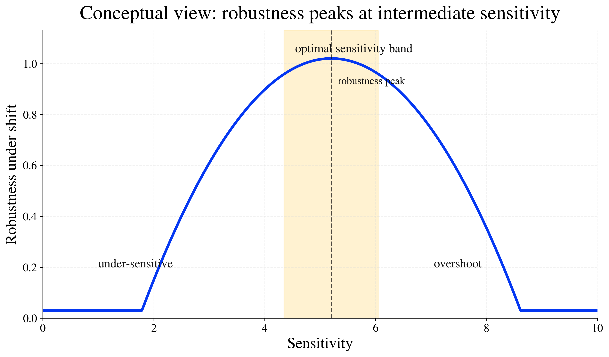
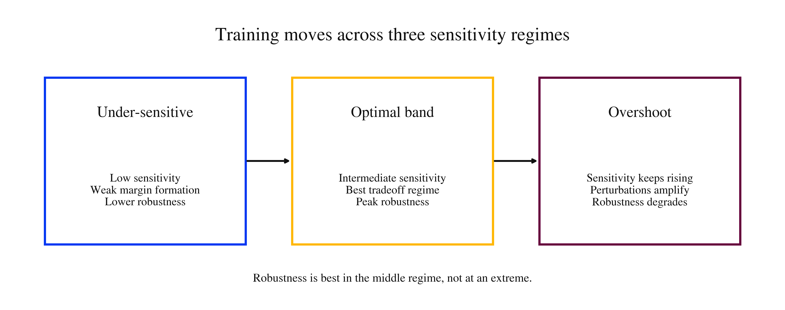
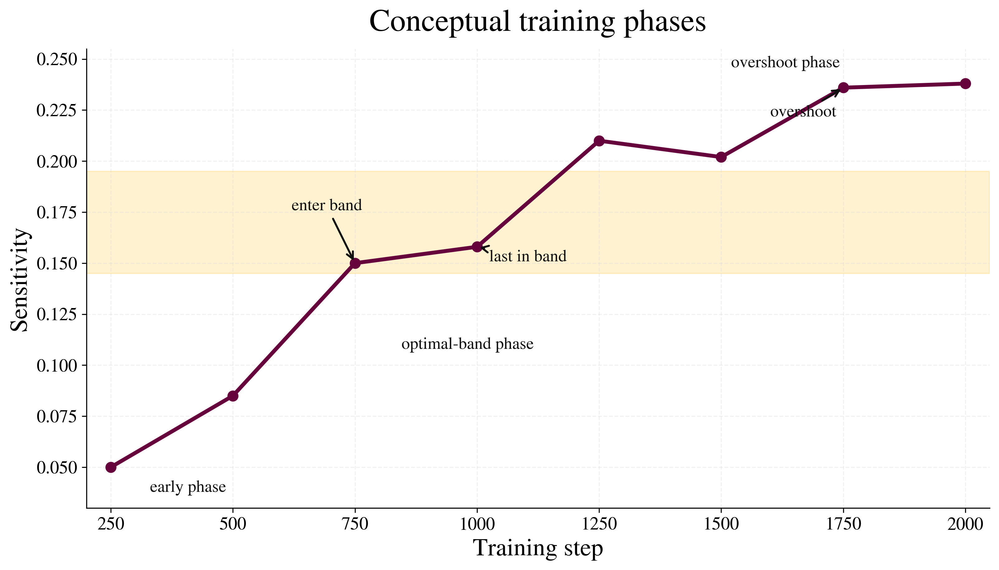

Classical view
Reduce sensitivity as much as possible, and robustness should improve monotonically.
Robustness is not maximized by driving sensitivity as low as possible. Instead, models appear to pass through an intermediate regime where severe-shift robustness is strongest. Training that overshoots this regime becomes increasingly brittle.

The classical intuition says lower sensitivity should always improve robustness. Our view is different: robustness under distribution shift is non-monotonic in sensitivity. There is an interior regime — an optimal sensitivity band — where performance under severe corruption is strongest.
Reduce sensitivity as much as possible, and robustness should improve monotonically.
Robustness peaks at intermediate sensitivity rather than at either extreme.
Training dynamics determine whether optimization enters the right regime or overshoots it.
A useful way to read the project is through three phases. In the early phase, the model is under-sensitive and has not yet built the right response geometry. In the middle phase, sensitivity enters a productive band where severe-shift robustness improves. In the late phase, optimization may overshoot that band, after which robustness degrades.

The website is organized around three complementary views: the geometry of the sensitivity–robustness relationship, the trajectory of training through the optimal band, and the increasing penalty of overshoot as corruption severity grows.



Training is not merely a march toward lower sensitivity. It traces a path through dynamical regimes. The most robust models are those whose optimization trajectories spend time near the optimal band rather than rushing past it.
This creates a practical interpretation: sensitivity can be monitored as a training-time signal, not just analyzed retrospectively after training is complete.
The project is not claiming a full large-scale transformer theory already. The point is more disciplined and more interesting: if robustness depends on traversing the right sensitivity regime during optimization, then sensitivity-like signals may become useful for monitoring transformer-scale training as models approach brittle regions.
Large models are trained in highly structured optimization regimes. Compact signals that warn about brittle dynamics could be valuable.
The right question may not be whether a model is simply sensitive, but whether training has pushed it beyond a productive regime.
This suggests a scalable monitoring lens for robustness in transformer-based systems and LLM training pipelines.
We track a sensitivity proxy during training, compare stable and unstable regimes, and evaluate robustness under severe corruption. The objective is not only to identify a final predictor of robustness, but to reveal how optimization moves through the regimes that generate or destroy it.
A compact training-time summary of responsiveness used to characterize model dynamics.
Performance is evaluated under strong corruption to expose brittleness that milder settings may hide.
Band entry, time spent near the band, and overshoot define distinct phases of optimization.
Robustness is non-monotonic in sensitivity and is best interpreted through training geometry.
Robustness under shift is not maximized at minimal sensitivity.
An interior optimal sensitivity band appears during training.
Optimization can cross and overshoot this band, degrading robustness.
Sensitivity may serve as a useful monitoring signal for transformer-scale training.
Towards an Optimal Sensitivity Band for Robustness Under Distribution Shift, with Implications for Transformers and LLMs
This project presents a training-dynamics view of robustness in which sensitivity is not merely minimized, but regulated. The main empirical and conceptual claim is that robust generalization under severe shift is strongest in an intermediate regime and weakens once optimization overshoots it.
@article{optimal_sensitivity_band_2026,
title = {Towards an Optimal Sensitivity Band for Robustness Under Distribution Shift},
author = {Himanshu Singh},
year = {2026},
journal = {COLM submission}
}Replace the title, author list, and links with your final metadata.